<title>The Women's AI Executive Rubric</title>
<meta name="claude:viewport-fit-sides" content="cover">
<meta name="description" content="The Women's AI Executive Rubric is a hands-on program where executive women build working AI tools alongside university students and local AI startups. Created by Hot Cognition and launched in Buffalo, NY in October 2026.">
<link rel="canonical" href="https://theaiexecutiverubric.com/">
<meta name="robots" content="index, follow">
<meta property="og:type" content="website">
<meta property="og:site_name" content="The Women's AI Executive Rubric">
<meta property="og:title" content="The Women's AI Executive Rubric">
<meta property="og:description" content="The Women's AI Executive Rubric is a hands-on program where executive women build working AI tools alongside university students and local AI startups. Created by Hot Cognition and launched in Buffalo, NY in October 2026.">
<meta property="og:url" content="https://theaiexecutiverubric.com/">
<meta property="og:image" content="https://theaiexecutiverubric.com/share-image.jpg">
<meta property="og:image:width" content="1200">
<meta property="og:image:height" content="630">
<meta property="og:image:alt" content="The AI Rubric team beside the welcome sign at SUNY Erie in Buffalo">
<meta name="twitter:card" content="summary_large_image">
<meta name="twitter:title" content="The Women's AI Executive Rubric">
<meta name="twitter:description" content="The Women's AI Executive Rubric is a hands-on program where executive women build working AI tools alongside university students and local AI startups. Created by Hot Cognition and launched in Buffalo, NY in October 2026.">
<meta name="twitter:image" content="https://theaiexecutiverubric.com/share-image.jpg">
<link rel="preconnect" href="https://fonts.googleapis.com">
<link rel="preconnect" href="https://fonts.gstatic.com" crossorigin>
<link rel="stylesheet" href="https://fonts.googleapis.com/css2?family=Poppins:ital,wght@0,500;0,600;0,700;0,800;1,700;1,800&family=Figtree:wght@400;500;600&display=swap">
<script type="application/ld+json">{"@context": "https://schema.org", "@graph": [{"@type": "Organization", "@id": "https://theaiexecutiverubric.com/#org", "name": "The Women's AI Executive Rubric", "alternateName": "The AI Rubric", "url": "https://theaiexecutiverubric.com/", "logo": "https://theaiexecutiverubric.com/share-image.jpg", "email": "tiffany@theaiexecutiverubric.com", "description": "The Women's AI Executive Rubric is a hands-on program where executive women build working AI tools alongside university students and local AI startups. Created by Hot Cognition and launched in Buffalo, NY in October 2026.", "parentOrganization": {"@type": "Organization", "name": "Hot Cognition", "url": "https://hotcognition.ai"}, "member": [{"@type": "Person", "name": "Tiffany Vasilchik", "jobTitle": "Co-Founder, Hot Cognition"}, {"@type": "Person", "name": "Cate Smit", "jobTitle": "Presentation and Confidence Coach, Enter Smiling"}, {"@type": "Person", "name": "Siobhan Smith", "jobTitle": "Founder and Principal, Siobhan Smith Executive Consulting"}, {"@type": "Person", "name": "Lorrie Turner", "jobTitle": "Former Chief Legal Officer, New Era Cap"}]}, {"@type": "WebPage", "@id": "https://theaiexecutiverubric.com/", "url": "https://theaiexecutiverubric.com/", "name": "The Women's AI Executive Rubric", "description": "The Women's AI Executive Rubric is a hands-on program where executive women build working AI tools alongside university students and local AI startups. Created by Hot Cognition and launched in Buffalo, NY in October 2026.", "about": {"@id": "https://theaiexecutiverubric.com/#org"}, "inLanguage": "en-US"}, {"@type": "EducationEvent", "name": "The Women's AI Executive Rubric: Buffalo", "startDate": "2026-10-02", "eventAttendanceMode": "https://schema.org/OfflineEventAttendanceMode", "eventStatus": "https://schema.org/EventScheduled", "location": {"@type": "Place", "name": "SUNY Erie", "address": {"@type": "PostalAddress", "addressLocality": "Buffalo", "addressRegion": "NY", "addressCountry": "US"}}, "organizer": {"@id": "https://theaiexecutiverubric.com/#org"}, "description": "A hands-on program where executive women built and presented working AI tools with university student facilitators.", "image": "https://theaiexecutiverubric.com/share-image.jpg"}, {"@type": "FAQPage", "mainEntity": [{"@type": "Question", "name": "What is the Women's AI Executive Rubric?", "acceptedAnswer": {"@type": "Answer", "text": "The Women's AI Executive Rubric is a hands-on program where executive women build working AI tools alongside university student facilitators and local AI startups. It was created by Hot Cognition and launched at SUNY Erie in Buffalo, New York on October 2, 2026."}}, {"@type": "Question", "name": "Who is the AI Rubric for?", "acceptedAnswer": {"@type": "Answer", "text": "It's built for executive women who want to lead in AI. Organizations can bring it to their leadership teams, and executive women's leadership organizations, universities and AI startup communities can partner to bring it to their cities."}}, {"@type": "Question", "name": "What do executives build and take home?", "acceptedAnswer": {"@type": "Answer", "text": "Every executive in Buffalo vibe-coded and presented a working AI tool, building it by describing it in plain language. Each leader also leaves with a personal context document, a prompt set for using AI as an assistant, strategist and creator, and a personal commitment to lead with AI."}}, {"@type": "Question", "name": "How is the AI Rubric different from other AI training?", "acceptedAnswer": {"@type": "Answer", "text": "Participants spend 30 to 40% of session time building, and the program covers AI trends, ethics and governance alongside practical tools. It brings executives, student facilitators and AI startups into one room, and every executive seat funds a seat at an intro to AI session for an underserved woman."}}, {"@type": "Question", "name": "How can my city host the AI Rubric?", "acceptedAnswer": {"@type": "Answer", "text": "We're bringing the AI Rubric to four new cities in 2027. Each city brings together an executive women's leadership organization, a university or business school and an AI startup community, with support from local business sponsors. Hot Cognition develops the curriculum and leads delivery, and net proceeds are shared with local partners."}}, {"@type": "Question", "name": "Why do women use AI less than men?", "acceptedAnswer": {"@type": "Answer", "text": "A Harvard Business School review of more than 300,000 people found that 39% of women use generative AI, compared with 48% of men. A 2026 Lean In survey found women get less encouragement from managers to use AI, and men who use it at work are 27% more likely to be praised for it."}}, {"@type": "Question", "name": "Who runs the AI Rubric?", "acceptedAnswer": {"@type": "Answer", "text": "The AI Rubric is led by Tiffany Vasilchik, co-founder of Hot Cognition, with Cate Smit of Enter Smiling, Siobhan Smith of Siobhan Smith Executive Consulting and Lorrie Turner, former Chief Legal Officer of New Era Cap."}}]}]}</script>
<style>
/* Layout: black stage bands (keynote, data, build day) alternate with blush paper bands (proof, partnership, booking); one magenta accent carries the Rubric mark through every section. */
:root{
  --ink:#0d080b;
  --stage:#150d12;
  --plum:#4a1838;
  --magenta:#e5007d;
  --magenta-soft:#ff4fa8;
  --blush:#fbeef4;
  --paper:#fffafc;
  --line-dark:rgba(255,255,255,.14);
  --line-light:rgba(74,24,56,.16);
  --text-dark:#f6eef2;
  --muted-dark:#c9b6c1;
  --text-light:#1d1018;
  --muted-light:#6a5160;
  --display:'Poppins',ui-sans-serif,system-ui,-apple-system,'Segoe UI',sans-serif;
  --body:'Figtree',ui-sans-serif,system-ui,-apple-system,'Segoe UI',sans-serif;
  color-scheme:dark;
}
*{box-sizing:border-box}
html{scroll-behavior:smooth}
body{background:var(--ink);color:var(--text-dark);font-family:var(--body);font-size:17px;line-height:1.6;-webkit-font-smoothing:antialiased}
body::before{content:"";position:fixed;inset:0 0 auto;height:env(safe-area-inset-top,0px);z-index:10;background:var(--ink)}
img{display:block;max-width:100%}
a{color:inherit}
:focus-visible{outline:3px solid var(--magenta-soft);outline-offset:3px;border-radius:4px}
.wrap{max-width:1180px;margin:0 auto;padding-left:max(24px,env(safe-area-inset-left,0px));padding-right:max(24px,env(safe-area-inset-right,0px))}
@media (max-width:520px){.wrap{padding-left:max(16px,env(safe-area-inset-left,0px));padding-right:max(16px,env(safe-area-inset-right,0px))}}
section{padding-block:clamp(64px,9vw,112px)}
h1,h2,h3{font-family:var(--display);margin:0;text-wrap:balance;letter-spacing:-.02em}
h2{font-size:clamp(30px,4.2vw,50px);line-height:1.08;font-weight:700}
h2 em,h1 em{font-style:italic;color:var(--magenta-soft);font-weight:800}
.light h2 em{color:var(--magenta)}
h3{font-size:21px;line-height:1.25;font-weight:600}
p{margin:0}
.pill{display:inline-flex;align-items:center;gap:8px;font-family:var(--display);font-weight:600;font-size:11.5px;letter-spacing:.24em;text-transform:uppercase;color:var(--magenta-soft);border:1.5px solid currentColor;border-radius:999px;padding:6px 14px}
.light .pill{color:var(--magenta)}
.lede{font-size:clamp(17px,1.6vw,19px);color:var(--muted-dark);max-width:62ch}
.light{background:var(--blush);color:var(--text-light)}
.light .lede{color:var(--muted-light)}
.paper{background:var(--paper);color:var(--text-light)}
.paper .lede{color:var(--muted-light)}
.btn{display:inline-flex;align-items:center;gap:10px;font-family:var(--display);font-weight:600;font-size:15px;text-decoration:none;border-radius:999px;padding:14px 24px;border:1.5px solid transparent;transition:transform .15s ease,background .15s ease;cursor:pointer}
.btn:hover{transform:translateY(-1px)}
.btn-primary{background:var(--magenta);color:#fff}
.btn-primary:hover{background:#c8006c}
.btn-ghost{border-color:rgba(255,255,255,.55);color:var(--text-dark)}
.btn-ghost:hover{background:rgba(255,255,255,.08)}
.section-head{display:grid;gap:18px;margin-bottom:48px;max-width:780px}

/* nav */
.nav{position:sticky;top:env(safe-area-inset-top,0px);z-index:20;background:rgba(13,8,11,.88);backdrop-filter:blur(10px);border-bottom:1px solid var(--line-dark)}
.nav .wrap{display:flex;align-items:center;justify-content:space-between;gap:16px;padding-block:14px}
.brand{display:flex;align-items:center;gap:12px;text-decoration:none;font-family:var(--display);font-weight:600;font-size:16px;min-width:0}
.brand small{display:block;font-weight:500;font-size:11px;letter-spacing:.18em;text-transform:uppercase;color:var(--muted-dark)}
.nav-links{display:flex;gap:26px;align-items:center;font-size:14.5px}
.nav-links a{text-decoration:none;color:var(--muted-dark)}
.nav-links a:hover{color:#fff}
.nav .btn{padding:10px 18px;font-size:14px}
@media (max-width:860px){.nav-links a:not(.btn){display:none}}

/* hero */
.hero{padding-block:clamp(48px,7vw,88px) clamp(56px,8vw,96px)}
.hero .wrap{display:grid;grid-template-columns:1.15fr .85fr;gap:clamp(32px,5vw,72px);align-items:center}
.hero-copy{display:grid;gap:26px;min-width:0}
.hero h1{font-size:clamp(40px,6.2vw,80px);line-height:1;font-weight:800}
.hero .lede{max-width:52ch}
.hero-ctas{display:flex;flex-wrap:wrap;gap:12px}
.hero-meta{display:flex;flex-wrap:wrap;gap:10px 28px;font-size:14px;color:var(--muted-dark);border-top:1px solid var(--line-dark);padding-top:22px}
.hero-meta b{color:#fff;font-family:var(--display);font-weight:600}
.hero-photo{position:relative;min-width:0}
.hero-photo img{width:100%;aspect-ratio:4/5;object-fit:cover;object-position:50% 30%;border-radius:220px 220px 20px 20px}
.hero-photo .dot{position:absolute;width:30%;aspect-ratio:1;border-radius:50%;background:var(--magenta);right:-6%;top:-5%;mix-blend-mode:screen;opacity:.9}
.hero-photo figcaption{position:absolute;left:16px;bottom:16px;right:16px;background:rgba(13,8,11,.82);border-radius:14px;padding:12px 16px;font-size:13.5px;color:var(--muted-dark)}
.hero-photo figcaption b{color:#fff;font-weight:600}
@media (max-width:860px){.hero .wrap{grid-template-columns:1fr}.hero-photo{max-width:440px}}

/* gap data */
.gap{background:var(--stage);border-top:1px solid var(--line-dark)}
.gap-grid{display:grid;grid-template-columns:repeat(2,minmax(0,1fr));gap:28px}
.stat{border-top:1px solid var(--line-dark);padding-top:24px;display:grid;gap:18px}
.stat-label{font-family:var(--display);font-weight:600;font-size:18px}
.bar-row{display:grid;grid-template-columns:64px 1fr 56px;align-items:center;gap:14px;font-size:14px;color:var(--muted-dark)}
.bar-track{height:26px;background:rgba(255,255,255,.06);border-radius:999px;overflow:hidden}
.bar{height:100%;border-radius:999px}
.bar.w{background:var(--magenta)}
.bar.m{background:#7d5a6e}
.bar-row b{font-family:var(--display);font-size:20px;color:#fff;font-variant-numeric:tabular-nums;text-align:right}
.source{font-size:13px;color:var(--muted-dark);margin-top:28px}
.gap-close{margin-top:44px;font-size:clamp(19px,2vw,24px);font-family:var(--display);font-weight:500;line-height:1.4;max-width:46ch;color:#fff}
@media (max-width:760px){.gap-grid{grid-template-columns:1fr}}

/* offers */
.offers{display:grid;grid-template-columns:repeat(3,minmax(0,1fr));gap:20px}
.offer{background:var(--paper);border:1px solid var(--line-light);border-radius:22px;padding:30px 28px;display:grid;grid-template-rows:auto auto 1fr auto;gap:16px;min-width:0}
.offer.feature{background:var(--plum);color:var(--text-dark);border-color:var(--plum)}
.offer .kicker{font-family:var(--display);font-size:12px;font-weight:600;letter-spacing:.18em;text-transform:uppercase;color:var(--magenta)}
.offer.feature .kicker{color:var(--magenta-soft)}
.offer p{color:var(--muted-light);font-size:16px}
.offer.feature p{color:var(--muted-dark)}
.offer ul{margin:0;padding:0;list-style:none;display:grid;gap:9px;font-size:15px}
.offer li{display:flex;gap:10px}
.offer li::before{content:"";flex:none;width:7px;height:7px;border-radius:50%;background:var(--magenta);margin-top:9px}
.offer .fee{border-top:1px solid var(--line-light);padding-top:16px;display:flex;justify-content:space-between;align-items:baseline;gap:12px;font-size:14px;color:var(--muted-light)}
.offer.feature .fee{border-color:var(--line-dark);color:var(--muted-dark)}
.offer .fee b{font-family:var(--display);font-size:17px;color:var(--text-light)}
.offer.feature .fee b{color:#fff}
@media (max-width:940px){.offers{grid-template-columns:1fr}}

/* day */
.day .wrap{display:grid;grid-template-columns:.9fr 1.1fr;gap:clamp(32px,5vw,64px);align-items:start}
.day-photos{display:grid;grid-template-columns:1fr 1fr;gap:12px;position:sticky;top:96px;min-width:0}
.day-photos img{width:100%;height:100%;object-fit:cover;border-radius:16px}
.day-photos .tall{grid-row:span 2;aspect-ratio:2/3}
.day-photos .sq{aspect-ratio:1}
.modules{display:grid;grid-template-columns:repeat(2,minmax(0,1fr));gap:0 28px;margin-top:36px}
.module{border-top:1px solid var(--line-dark);padding-block:22px;display:grid;gap:8px;min-width:0}
.module h3{font-size:18px}
.module p{color:var(--muted-dark);font-size:15.5px}
.leave{margin-top:44px;background:var(--plum);border-radius:22px;padding:28px;display:grid;gap:16px}
.leave h3{font-size:19px}
.leave ol{margin:0;padding:0;list-style:none;display:grid;gap:12px;counter-reset:l}
.leave li{display:grid;grid-template-columns:30px 1fr;gap:12px;color:var(--text-dark);font-size:15.5px}
.leave li::before{counter-increment:l;content:counter(l);width:26px;height:26px;border-radius:50%;border:1.5px solid var(--magenta-soft);color:var(--magenta-soft);font-family:var(--display);font-weight:600;font-size:13px;display:grid;place-items:center}
@media (max-width:900px){.day .wrap{grid-template-columns:1fr}.day-photos{position:static}}
@media (max-width:560px){.modules{grid-template-columns:1fr}}

/* proof */
.proof-top{display:grid;grid-template-columns:1fr 1fr;gap:clamp(28px,5vw,64px);align-items:end;margin-bottom:44px}
.proof-top>*{min-width:0}
.date-chip{display:inline-flex;gap:12px;align-items:center;background:var(--ink);color:#fff;border-radius:999px;padding:9px 18px;font-family:var(--display);font-weight:600;font-size:14px}
.date-chip span{color:var(--muted-dark);font-weight:500}
.proof-nums{display:grid;grid-template-columns:repeat(3,minmax(0,1fr));gap:16px}
.num{border-top:2px solid var(--plum);padding-top:14px;display:grid;gap:4px}
.num b{font-family:var(--display);font-size:clamp(34px,4vw,48px);font-weight:800;line-height:1;color:var(--plum);font-variant-numeric:tabular-nums}
.num span{font-size:14px;color:var(--muted-light)}
.mosaic{display:grid;grid-template-columns:2fr 1fr 1fr;grid-template-rows:1fr 1fr;gap:12px;height:clamp(360px,46vw,560px)}
.mosaic img{width:100%;height:100%;object-fit:cover;border-radius:16px;min-height:0}
.mosaic .big{grid-row:span 2}
.mosaic .tall{grid-row:span 2}
@media (max-width:760px){.proof-top{grid-template-columns:1fr}.mosaic{grid-template-columns:1fr 1fr;grid-template-rows:auto;height:auto}.mosaic img{aspect-ratio:4/3}.mosaic .big{grid-column:span 2;grid-row:auto}.mosaic .tall{grid-row:auto}}
.voices{margin-top:44px;display:grid;grid-template-columns:repeat(4,minmax(0,1fr));gap:14px}
.voice{background:var(--magenta);color:#fff;border-radius:6px;padding:18px 18px 22px;font-family:var(--display);font-weight:500;font-size:16px;line-height:1.35;box-shadow:0 10px 24px -14px rgba(74,24,56,.6)}
.voice:nth-child(odd){transform:rotate(-1.4deg)}
.voice:nth-child(even){transform:rotate(1.2deg)}
.voices-cap{margin-top:16px;font-size:13.5px;color:var(--muted-light)}
@media (max-width:860px){.voices{grid-template-columns:repeat(2,minmax(0,1fr))}}
.partners{margin-top:52px;border-top:1px solid var(--line-light);padding-top:24px;display:grid;gap:10px}
.partners .label{font-family:var(--display);font-size:12px;font-weight:600;letter-spacing:.2em;text-transform:uppercase;color:var(--muted-light)}
.partners p{font-size:16px;color:var(--text-light)}

/* city */
.city .wrap>.section-head{max-width:860px}
.four{display:grid;grid-template-columns:repeat(4,minmax(0,1fr));gap:20px}
.four article{border-top:1px solid var(--line-light);padding-top:20px;display:grid;gap:10px;align-content:start;min-width:0}
.four .ico{width:38px;height:38px;border-radius:50%;background:var(--blush);display:grid;place-items:center;color:var(--magenta)}
.four p{font-size:15.5px;color:var(--muted-light)}
.hc-bar{margin-top:28px;background:var(--ink);color:#fff;border-radius:999px;padding:18px 26px;display:flex;gap:14px;align-items:center;font-size:16px}
.hc-bar b{font-family:var(--display);font-weight:600}
.steps{margin-top:56px;display:grid;grid-template-columns:repeat(4,minmax(0,1fr));gap:20px;position:relative}
.steps::before{content:"";position:absolute;left:10px;right:0;top:9px;height:1px;background:var(--line-light)}
.step{position:relative;display:grid;gap:8px;padding-top:36px;min-width:0}
.step::before{content:"";position:absolute;top:0;left:0;width:19px;height:19px;border-radius:50%;background:var(--magenta)}
.step .n{font-family:var(--display);font-weight:800;font-size:28px;color:var(--magenta);line-height:1}
.step p{font-size:15px;color:var(--muted-light)}
.city-note{margin-top:36px;font-size:15.5px;color:var(--muted-light);max-width:70ch}
@media (max-width:900px){.four,.steps{grid-template-columns:repeat(2,minmax(0,1fr))}.steps::before{display:none}.hc-bar{border-radius:18px}}
@media (max-width:480px){.four,.steps{grid-template-columns:1fr}}

/* about */
.about .wrap{display:grid;grid-template-columns:.8fr 1.2fr;gap:clamp(32px,5vw,72px);align-items:center}
.about-photo img{width:100%;aspect-ratio:3/4;object-fit:cover;object-position:50% 20%;border-radius:20px 20px 220px 220px}
.about-copy{display:grid;gap:20px;min-width:0}
.about-copy p{color:var(--muted-dark);max-width:62ch}
.creds{display:flex;flex-wrap:wrap;gap:8px;margin-top:6px}
.creds span{border:1px solid var(--line-dark);border-radius:999px;padding:6px 14px;font-size:13.5px;color:var(--text-dark)}
@media (max-width:860px){.about .wrap{grid-template-columns:1fr}.about-photo{max-width:380px}}

/* booking */
.book .wrap{display:grid;grid-template-columns:.85fr 1.15fr;gap:clamp(32px,5vw,64px);align-items:start}
.book-copy{display:grid;gap:20px;min-width:0}
.contact-card{background:var(--paper);border:1px solid var(--line-light);border-radius:18px;padding:20px 22px;display:grid;gap:10px;font-size:15px}
.contact-card .row{display:flex;justify-content:space-between;gap:12px;align-items:center;flex-wrap:wrap}
.contact-card .k{color:var(--muted-light);font-size:13px;letter-spacing:.12em;text-transform:uppercase;font-family:var(--display);font-weight:600}
.contact-card .v{font-weight:600;user-select:all;word-break:break-all}
form{background:var(--paper);border:1px solid var(--line-light);border-radius:24px;padding:clamp(22px,3vw,34px);display:grid;gap:18px;min-width:0}
fieldset{border:0;padding:0;margin:0;display:grid;gap:10px}
legend,label{font-family:var(--display);font-weight:600;font-size:14px;color:var(--text-light);padding:0}
.choice{display:grid;grid-template-columns:repeat(2,minmax(0,1fr));gap:8px}
.choice label{display:flex;gap:10px;align-items:center;border:1.5px solid var(--line-light);border-radius:12px;padding:12px 14px;font-weight:500;font-family:var(--body);font-size:15px;cursor:pointer}
.choice input{accent-color:var(--magenta)}
.choice label:has(input:checked){border-color:var(--magenta);background:var(--blush)}
.fields{display:grid;grid-template-columns:repeat(2,minmax(0,1fr));gap:16px}
.field{display:grid;gap:7px;min-width:0}
.field.full{grid-column:1/-1}
input[type=text],input[type=email],input[type=date],select,textarea{width:100%;font:inherit;font-size:15.5px;color:var(--text-light);background:#fff;border:1.5px solid var(--line-light);border-radius:12px;padding:12px 14px;color-scheme:light}
textarea{min-height:110px;resize:vertical}
input:focus,select:focus,textarea:focus{outline:none;border-color:var(--magenta)}
.form-foot{display:flex;flex-wrap:wrap;gap:14px;align-items:center;justify-content:space-between}
.form-foot small{color:var(--muted-light);font-size:13px;max-width:36ch}
.err{color:#b0005f;font-size:14px}
.done{background:var(--plum);color:var(--text-dark);border-radius:18px;padding:22px;display:grid;gap:12px}
.done pre{white-space:pre-wrap;margin:0;font-family:var(--body);font-size:14px;background:rgba(0,0,0,.25);border-radius:12px;padding:14px;color:var(--text-dark);max-height:240px;overflow:auto}
.done .btns{display:flex;flex-wrap:wrap;gap:10px}
.done .btn{padding:10px 18px;font-size:14px}
@media (max-width:900px){.book .wrap{grid-template-columns:1fr}}
@media (max-width:520px){.fields,.choice{grid-template-columns:1fr}}

footer{background:var(--ink);border-top:1px solid var(--line-dark)}
footer .wrap{display:flex;flex-wrap:wrap;justify-content:space-between;gap:16px;padding-block:32px;font-size:14px;color:var(--muted-dark)}
footer a{text-decoration:none}
footer a:hover{color:#fff}

@media (prefers-reduced-motion:reduce){html{scroll-behavior:auto}.btn{transition:none}.btn:hover{transform:none}}

/* v2: problem-first hero, differentiators, gallery, email booking */
.hero .wrap{grid-template-columns:1.1fr .9fr}
.hero h1{font-size:clamp(38px,5.6vw,72px);line-height:1.02}
.hero-stats{display:grid;grid-template-columns:repeat(2,minmax(0,1fr));gap:24px;border-top:1px solid var(--line-dark);padding-top:24px}
.hero-stat{display:grid;gap:6px;min-width:0}
.hero-stat b{font-family:var(--display);font-weight:800;font-size:clamp(52px,7vw,88px);line-height:.95;color:var(--magenta-soft);font-variant-numeric:tabular-nums;letter-spacing:-.03em}
.hero-stat span{font-size:15.5px;color:var(--muted-dark);max-width:30ch}
.hero-stat em{font-style:normal;color:#fff;font-weight:600}
.hero-source{font-size:12.5px;color:var(--muted-dark)}
.hero-photo img{aspect-ratio:4/5;object-position:30% 40%}
@media (max-width:520px){.hero-stats{grid-template-columns:1fr}}

.diff .wrap{display:grid;grid-template-columns:.85fr 1.15fr;gap:clamp(32px,5vw,72px);align-items:start}
.diff-photo{position:sticky;top:96px;min-width:0}
.diff-photo img{width:100%;aspect-ratio:3/4;object-fit:cover;border-radius:20px}
.diff-list{display:grid;margin-top:36px}
.diff-item{display:grid;grid-template-columns:minmax(0,.9fr) minmax(0,1.3fr);gap:24px;border-top:1px solid var(--line-light);padding-block:26px}
.diff-item:last-child{border-bottom:1px solid var(--line-light)}
.diff-item h3{color:var(--magenta);font-size:21px}
.diff-item p{color:var(--muted-light);font-size:16.5px}
@media (max-width:900px){.diff .wrap{grid-template-columns:1fr}.diff-photo{position:static;max-width:440px}}
@media (max-width:560px){.diff-item{grid-template-columns:1fr;gap:8px}}

.gallery-head{display:flex;flex-wrap:wrap;justify-content:space-between;align-items:end;gap:20px;margin-bottom:36px}
.gallery-head .section-head{margin-bottom:0}
.gallery-meta{font-size:14px;color:var(--muted-dark);display:grid;gap:4px;text-align:right}
.gallery-meta b{color:#fff;font-family:var(--display);font-weight:600}
.gallery{display:grid;grid-template-columns:repeat(3,minmax(0,1fr));gap:14px;grid-template-areas:"group group welcome" "group group cards" "leecia notes smile"}
.gallery figure{margin:0;min-width:0}
.gallery img{width:100%;height:100%;object-fit:cover;border-radius:14px;display:block}
.g-group{grid-area:group}.g-welcome{grid-area:welcome}.g-cards{grid-area:cards}.g-leecia{grid-area:leecia}.g-notes{grid-area:notes}.g-smile{grid-area:smile}
.g-welcome img,.g-cards img{aspect-ratio:3/2}
.g-leecia img,.g-notes img,.g-smile img{aspect-ratio:4/5;object-position:50% 20%}
@media (max-width:760px){.gallery{grid-template-columns:repeat(2,minmax(0,1fr));grid-template-areas:"group group" "welcome cards" "leecia smile" "notes notes"}.g-group img{aspect-ratio:3/2}.g-notes img{aspect-ratio:3/2}}
.gallery-partners{margin-top:30px;border-top:1px solid var(--line-dark);padding-top:22px;display:grid;gap:8px;font-size:15.5px;color:var(--muted-dark)}
.gallery-partners .label{font-family:var(--display);font-size:12px;font-weight:600;letter-spacing:.2em;text-transform:uppercase;color:var(--magenta-soft)}
@media (max-width:520px){.gallery-meta{text-align:left}}

.offers.two{grid-template-columns:repeat(2,minmax(0,1fr))}
.offer .fee b{font-size:15px}
.offer-photo{width:100%;aspect-ratio:16/9;object-fit:cover;border-radius:14px}
@media (max-width:860px){.offers.two{grid-template-columns:1fr}}

.mod-wrap{display:grid;grid-template-columns:1.2fr .8fr;gap:clamp(28px,4vw,56px);align-items:start}
.mod-wrap>*{min-width:0}
.mod-wrap .leave{margin-top:0}
@media (max-width:900px){.mod-wrap{grid-template-columns:1fr}}

.mail-card{background:var(--paper);border:1px solid var(--line-light);border-radius:24px;padding:clamp(24px,4vw,40px);display:grid;gap:20px;min-width:0}
.mail-card .k{font-family:var(--display);font-size:12px;font-weight:600;letter-spacing:.2em;text-transform:uppercase;color:var(--magenta)}
.mail-addr{font-family:var(--display);font-weight:700;font-size:clamp(16px,2.2vw,24px);color:var(--plum);user-select:all;overflow-wrap:normal;line-height:1.2}
.mail-card .btns{display:flex;flex-wrap:wrap;gap:10px}
.btn-outline{border-color:var(--plum);color:var(--plum);background:transparent}
.btn-outline:hover{background:rgba(74,24,56,.06)}
.mail-card ul{margin:0;padding:0;list-style:none;display:grid;gap:8px;font-size:15.5px;color:var(--muted-light)}
.mail-card li{display:flex;gap:10px}
.mail-card li::before{content:"";flex:none;width:7px;height:7px;border-radius:50%;background:var(--magenta);margin-top:9px}
.mail-links{display:flex;flex-wrap:wrap;gap:8px 20px;font-size:14.5px;border-top:1px solid var(--line-light);padding-top:16px}
.mail-links a{color:var(--plum);font-weight:600;text-decoration:none}
.team-wrap{display:block!important}
.team-photo{margin:0 0 28px}
.team-photo img{width:100%;border-radius:20px;display:block}
.team{display:grid;grid-template-columns:repeat(2,minmax(0,1fr));gap:20px}
.member{display:grid;grid-template-columns:72px 1fr;gap:20px;background:var(--stage);border:1px solid var(--line-dark);border-radius:20px;padding:26px;min-width:0}
.avatar{width:72px;height:72px;border-radius:50%;background:var(--magenta);color:#fff;display:grid;place-items:center;font-family:var(--display);font-weight:600;font-size:20px;letter-spacing:.04em}
.member-body{display:grid;gap:8px;align-content:start;min-width:0}
.member h3{font-size:22px}
.member .role{color:var(--magenta-soft);font-size:14.5px;letter-spacing:.04em}
.member p:not(.role){color:var(--muted-dark);font-size:15.5px}
@media (max-width:860px){.team{grid-template-columns:1fr}}
@media (max-width:480px){.member{grid-template-columns:1fr}.avatar{width:56px;height:56px;font-size:17px}}

/* v11: research band, paths, impact, exchange, research, topics */
.stake{font-family:var(--display);font-weight:500;font-size:clamp(18px,1.8vw,22px);line-height:1.4;color:#fff;max-width:40ch}
.band-stats{display:grid;grid-template-columns:repeat(3,minmax(0,1fr));gap:28px}
.band-stats .hero-stat{border-top:1px solid var(--line-dark);padding-top:22px;align-content:start}
.band-stats small{font-size:12.5px;color:var(--muted-dark);margin-top:6px}
.paths{display:grid;grid-template-columns:repeat(4,minmax(0,1fr));gap:18px}
.path{background:#fff;border:1px solid var(--line-light);border-radius:20px;padding:26px 24px;display:grid;grid-template-rows:auto auto 1fr auto;gap:12px;min-width:0}
.path .kicker{font-family:var(--display);font-size:12px;font-weight:600;letter-spacing:.18em;text-transform:uppercase;color:var(--magenta)}
.path p{color:var(--muted-light);font-size:15.5px}
.path-links{display:flex;flex-wrap:wrap;align-items:center;gap:10px 16px;margin-top:6px}
.path-links .btn{padding:10px 18px;font-size:14px}
.path-links a:not(.btn){color:var(--plum);font-weight:600;font-size:14.5px;text-decoration:none}
.impact-nums{display:grid;grid-template-columns:repeat(4,minmax(0,1fr));gap:20px}
.impact-nums .num{border-top:2px solid var(--plum);padding-top:14px;display:grid;gap:6px;align-content:start}
.impact-nums .num b{font-family:var(--display);font-size:clamp(36px,4.2vw,52px);font-weight:800;line-height:1;color:var(--plum);font-variant-numeric:tabular-nums}
.impact-nums .num span{font-size:15px;color:var(--muted-light)}
.impact-note{margin-top:26px;font-size:15.5px;color:var(--muted-light);max-width:72ch}
.quotes{margin-top:36px;display:grid;grid-template-columns:repeat(3,minmax(0,1fr));gap:18px}
.quote{margin:0;background:var(--blush);border-radius:18px;padding:24px;display:grid;gap:14px;align-content:space-between}
.quote blockquote{margin:0;font-family:var(--display);font-weight:500;font-size:19px;line-height:1.4;color:var(--text-light)}
.quote figcaption{font-size:13px;letter-spacing:.12em;text-transform:uppercase;color:var(--magenta);font-family:var(--display);font-weight:600}
.exchange{margin-top:28px;display:grid;grid-template-columns:repeat(2,minmax(0,1fr));gap:20px}
.ex-col{background:#fff;border:1px solid var(--line-light);border-radius:20px;padding:24px;display:grid;gap:12px;align-content:start}
.ex-col h3{font-size:19px;color:var(--plum)}
.ex-col ul{margin:0;padding:0;list-style:none;display:grid;gap:9px;font-size:15.5px;color:var(--muted-light)}
.ex-col li{display:flex;gap:10px}
.ex-col li::before{content:"";flex:none;width:7px;height:7px;border-radius:50%;background:var(--magenta);margin-top:9px}
.r-grid{display:grid;grid-template-columns:repeat(3,minmax(0,1fr));gap:20px}
.r-grid article{border-top:1px solid var(--line-dark);padding-top:20px;display:grid;gap:8px;align-content:start}
.r-grid h3{color:var(--magenta-soft)}
.r-grid p{color:var(--muted-dark);font-size:15.5px}
.topics{border:0;margin:0;padding:0;display:grid;gap:8px}
.topics legend{margin-bottom:8px}
.topics label{display:flex;gap:10px;align-items:center;border:1.5px solid var(--line-light);border-radius:12px;padding:11px 14px;font-size:15px;color:var(--text-light);cursor:pointer}
.topics input{accent-color:var(--magenta)}
.topics label:has(input:checked){border-color:var(--magenta);background:var(--blush)}
@media (max-width:980px){.paths{grid-template-columns:repeat(2,minmax(0,1fr))}.impact-nums{grid-template-columns:repeat(2,minmax(0,1fr))}}
@media (max-width:760px){.band-stats,.quotes,.r-grid,.exchange{grid-template-columns:1fr}}
@media (max-width:520px){.paths{grid-template-columns:1fr}}
.pill{justify-self:start;align-self:start;width:max-content;max-width:100%}
.hero-stat small a{color:inherit;text-decoration:underline;text-underline-offset:2px}
.faq{display:grid;grid-template-columns:repeat(2,minmax(0,1fr));gap:0 40px}
.faq-item{border-top:1px solid var(--line-light);padding-block:22px;display:grid;gap:8px;min-width:0}
.faq-item h3{font-size:19px;color:var(--plum)}
.faq-item p{color:var(--muted-light);font-size:16px}
@media (max-width:860px){.faq{grid-template-columns:1fr}}
:where(img[width][height]){height:auto}
</style>

<svg width="0" height="0" style="position:absolute" aria-hidden="true">
  <defs>
    <linearGradient id="rg" x1="0" y1="0" x2="1" y2="1"><stop offset="0" stop-color="#5a1a46"/><stop offset="1" stop-color="#e5007d"/></linearGradient>
    <symbol id="mark" viewBox="0 0 40 52"><circle cx="27" cy="11" r="10" fill="#e5007d"/><rect x="2" y="14" width="19" height="38" rx="9.5" transform="rotate(-32 11.5 33)" fill="url(#rg)"/></symbol>
  </defs>
</svg>

<header class="nav">
  <div class="wrap">
    <a class="brand" href="#top"><svg width="26" height="34" aria-hidden="true"><use href="#mark"/></svg><span>The Women's AI Executive Rubric<small>Hot Cognition</small></span></a>
    <nav class="nav-links" aria-label="Sections">
      <a href="#different">Why the AI Rubric</a>
      <a href="#impact">Results</a>
      <a href="#city">Your city</a>
      <a href="#work">Organizations</a>
      <a href="#research">Research</a>
      <a href="#about">Team</a>
      <a href="#faq">FAQ</a>
      <a class="btn btn-primary" href="#contact">Get in touch</a>
    </nav>
  </div>
</header>

<main id="top">
<section class="hero">
  <div class="wrap">
    <div class="hero-copy">
      <span class="pill">The Women's AI Executive Rubric</span>
      <h1>Women are using AI less and getting <em>less encouragement</em> to try it</h1>
      <p class="stake">That gap is becoming a barrier for the leaders best placed to shape how AI changes their organizations.</p>
      <p class="lede">The Women's AI Executive Rubric is a hands-on program where executive women build with AI alongside students and local AI founders. They leave more confident, informed and influential in how AI shapes their organizations.</p>
      <div class="hero-ctas">
        <a class="btn btn-primary" href="#paths">Find your path</a>
        <a class="btn btn-ghost" href="#city">Bring the AI Rubric to your city</a>
      </div>
    </div>
    <figure class="hero-photo" style="margin:0">
      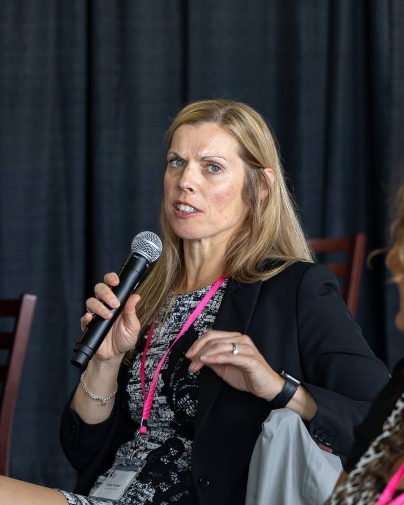
      <figcaption><b>Risk, governance and ethics.</b> Executives work through accountability and risk at the discussion tables.</figcaption>
    </figure>
  </div>
</section>

<section class="gap research-band" aria-labelledby="gap-h">
  <div class="wrap">
    <div class="section-head">
      <span class="pill">The research</span>
      <h2 id="gap-h">The gap is real, and women <em>excel once they start</em></h2>
    </div>
    <div class="band-stats">
      <div class="hero-stat"><b>39%</b><span>of women use generative AI, compared with <em>48% of men</em></span><small><a href="https://aiinstitute.hbs.edu/the-gender-divide-in-generative-ai-a-global-challenge-update/" target="_blank" rel="noopener">Harvard Business School, "The Gender Divide in Generative AI," August 2026 update</a></small></div>
      <div class="hero-stat"><b>27%</b><span>more likely that a man is praised by management for using AI at work <em>than a woman</em></span><small><a href="https://www.forbes.com/sites/kimelsesser/2026/04/01/the-gender-gap-in-ai-use-and-whats-driving-it-according-to-lean-in-survey/" target="_blank" rel="noopener">Lean In survey, 2026, as reported by Forbes</a></small></div>
      <div class="hero-stat"><b>65.4</b><span>average AI collaboration score for women, compared with <em>62.5 for men</em>, and women challenged the AI more often</span><small>Corrix, "Measuring Human-AI Collaboration," September 2026</small></div>
    </div>
  </div>
</section>

<section class="paper" id="paths" aria-labelledby="paths-h">
  <div class="wrap">
    <div class="section-head">
      <span class="pill">Find your path</span>
      <h2 id="paths-h">Four ways to work <em>with us</em></h2>
    </div>
    <div class="paths">
      <article class="path">
        <span class="kicker">For women's groups, universities and AI startups</span>
        <h3>Bring the AI Rubric to your city</h3>
        <p>Build a connected local ecosystem that links women executives with the next generation of talent from local universities and AI startups. We're choosing four new cities for 2027.</p>
        <div class="path-links"><a class="btn btn-primary" href="#contact" data-topic="city">Partner with us</a><a href="#city">How it works</a></div>
      </article>
      <article class="path">
        <span class="kicker">For organizations</span>
        <h3>Bring the AI Rubric to your leadership team</h3>
        <p>Book a keynote or a custom AI Rubric workshop for your women leaders, your leadership team or your members.</p>
        <div class="path-links"><a class="btn btn-primary" href="#contact" data-topic="org">Explore a workshop</a><a href="#work">See formats</a></div>
      </article>
      <article class="path">
        <span class="kicker">For research partners</span>
        <h3>Help support our study on executive women and AI</h3>
        <p>Support dedicated research on how executive women use AI, approach governance and think about its impact on leadership.</p>
        <div class="path-links"><a class="btn btn-primary" href="#contact" data-topic="research">Talk about research</a><a href="#research">Learn more</a></div>
      </article>
      <article class="path">
        <span class="kicker">For executive women</span>
        <h3>Join the AI Rubric in your city</h3>
        <p>Build with AI alongside other senior women, with facilitators at your side. Tell us your city and we'll let you know when the AI Rubric is coming.</p>
        <div class="path-links"><a class="btn btn-primary" href="#contact" data-topic="list">Join the list</a><a href="#program">See the program</a></div>
      </article>
    </div>
  </div>
</section>

<section class="light diff" id="different" aria-labelledby="diff-h">
  <div class="wrap">
    <div class="diff-photo">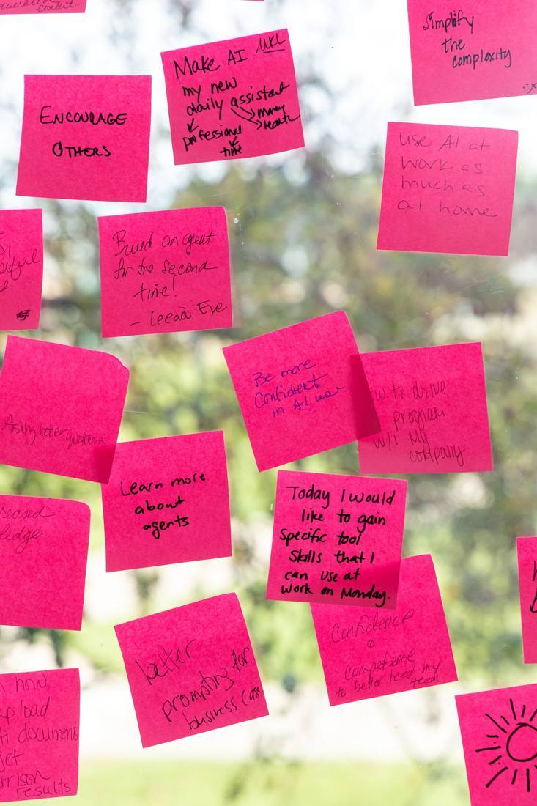</div>
    <div>
      <div class="section-head" style="margin-bottom:0">
        <span class="pill">Differentiators</span>
        <h2 id="diff-h">What makes the AI Rubric <em>different</em></h2>
        <p class="lede">The AI Rubric is built for executive women, the leaders with the most to gain from closing the gap. Five things set it apart.</p>
      </div>
      <div class="diff-list">
        <div class="diff-item"><h3>Macro and micro AI fluency</h3><p>Current trends, ethics and societal stakes sit alongside practical tools and a personal AI assessment for every leader.</p></div>
        <div class="diff-item"><h3>Hands-on building</h3><p>Participants spend 30 to 40% of session time building something themselves, so they leave with tools they can use at work the next morning.</p></div>
        <div class="diff-item"><h3>Human performance</h3><p>We support personal development with the time leaders free up through AI, including presence and confidence coaching.</p></div>
        <div class="diff-item"><h3>A connected ecosystem</h3><p>Local sponsors, student facilitators and AI startups join executives in the room, creating relationships that last after the session ends.</p></div>
        <div class="diff-item"><h3>A TOMS-style charitable contribution</h3><p>Every executive seat funds a seat at an intro to AI session for an underserved woman in the same community.</p></div>
      </div>
    </div>
  </div>
</section>

<section class="paper" id="impact" aria-labelledby="impact-h">
  <div class="wrap">
    <div class="section-head">
      <span class="pill">Results from Buffalo</span>
      <h2 id="impact-h">Every executive vibe-coded and presented a <em>working AI tool</em></h2>
      <p class="lede">We launched the AI Rubric at SUNY Erie in Buffalo on October 2, 2026. Executives built their tools by describing them in plain language, with university student facilitators at their side. Here's how they rated the experience.</p>
    </div>
    <div class="impact-nums">
      <div class="num"><b>100%</b><span>left with a tangible takeaway</span></div>
      <div class="num"><b>95%</b><span>said it was worth their time</span></div>
      <div class="num"><b>85%</b><span>are likely to put an AI-driven strategy in place within six months</span></div>
      <div class="num"><b>4.75</b><span>out of 5 average rating for the build session</span></div>
    </div>
    <p class="impact-note">The next day, women at our funded intro to AI session rated their experience 4.9 out of 5, and every one who answered said they left with a tangible takeaway. Ratings from attendee evaluations, October 2026.</p>
    <div class="quotes">
      <figure class="quote"><blockquote>Loved how hands-on and interactive this was!</blockquote><figcaption>Executive attendee</figcaption></figure>
      <figure class="quote"><blockquote>Everything presented today was done executively and efficiently.</blockquote><figcaption>Intro to AI session attendee</figcaption></figure>
      <figure class="quote"><blockquote>Great personalities, activities and clear information.</blockquote><figcaption>Intro to AI session attendee</figcaption></figure>
    </div>
  </div>
</section>

<section class="gap" id="photos" aria-labelledby="photos-h">
  <div class="wrap">
    <div class="gallery-head">
      <div class="section-head">
        <span class="pill">Inside the AI Rubric</span>
        <h2 id="photos-h">Executives, students and AI founders <em>building together</em></h2>
      </div>
      <div class="gallery-meta"><b>SUNY Erie, Buffalo, NY</b><span>October 2, 2026</span></div>
    </div>
    <div class="gallery">
      <figure class="g-group">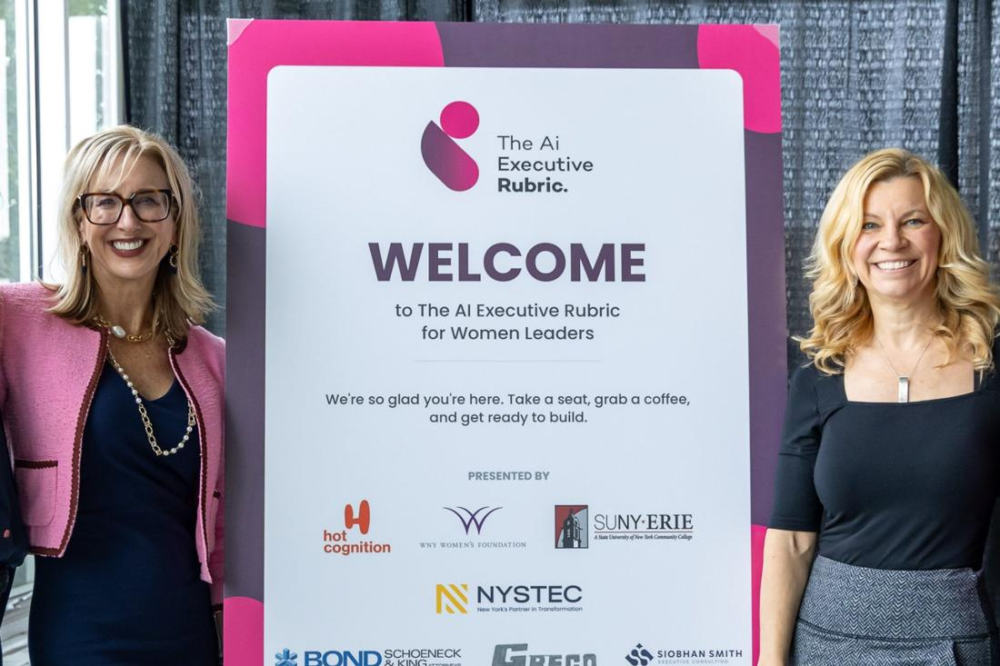</figure>
      <figure class="g-welcome">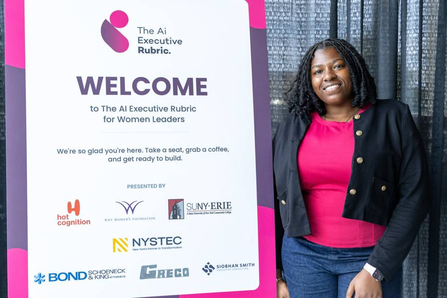</figure>
      <figure class="g-cards">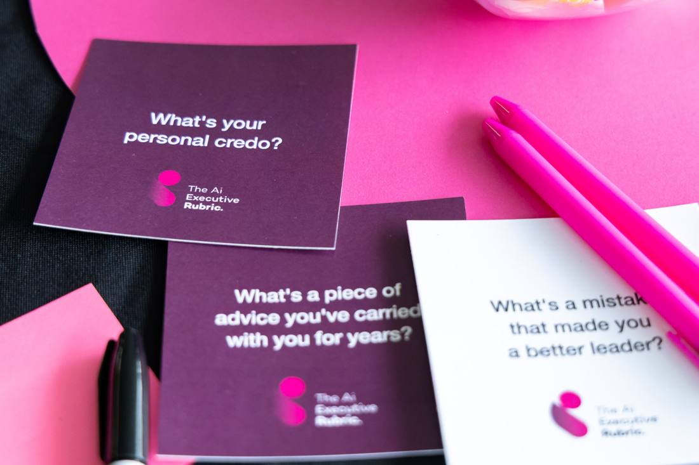</figure>
      <figure class="g-leecia">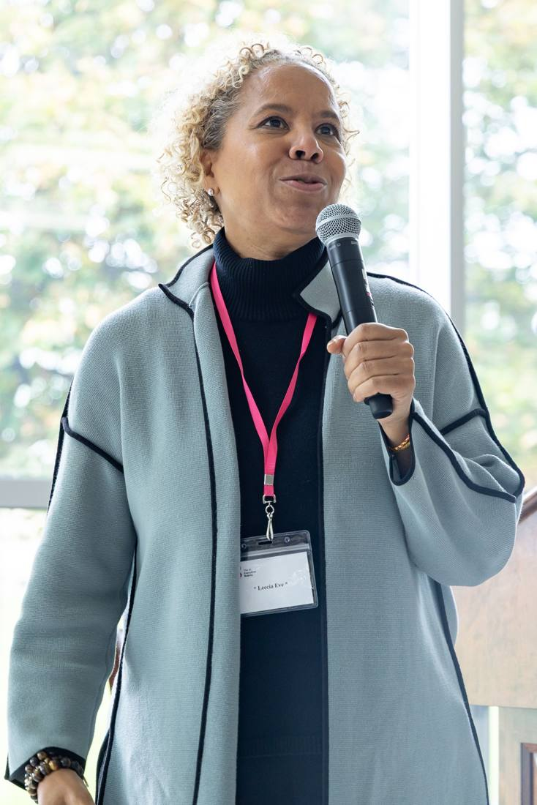</figure>
      <figure class="g-notes">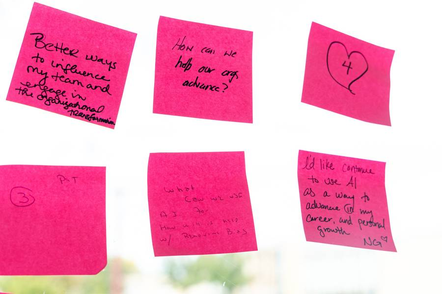</figure>
      <figure class="g-smile">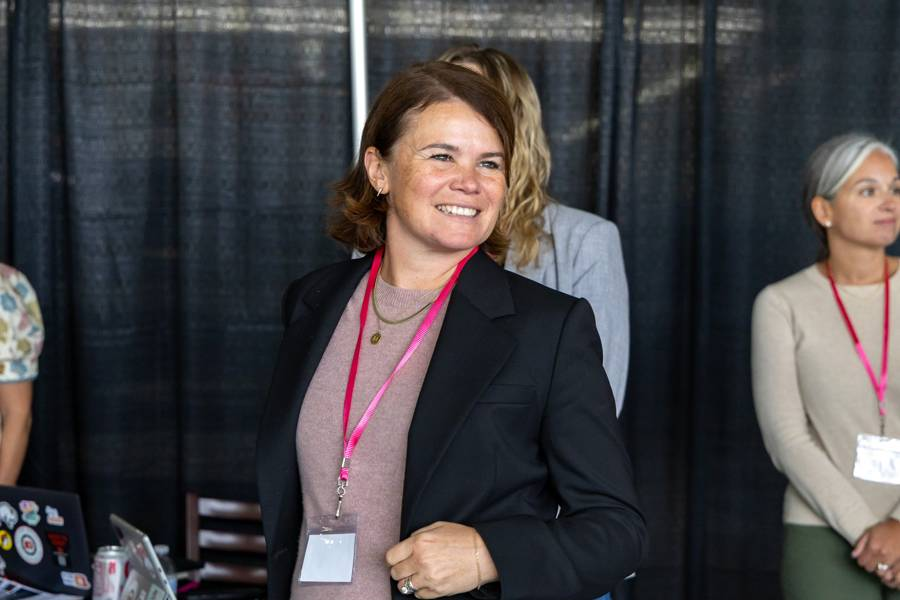</figure>
    </div>
    <div class="gallery-partners">
      <span class="label">Brought to you in Buffalo by</span>
      <span>SUNY Erie, the University at Buffalo, Hot Cognition and the WNY Women's Foundation, with support from NYSTEC, Bond, Schoeneck &amp; King, Greco VC and Siobhan Smith Executive Consulting.</span>
    </div>
  </div>
</section>

<section class="day" id="program" aria-labelledby="mod-h">
  <div class="wrap" style="display:block">
    <div class="section-head">
      <span class="pill">The program</span>
      <h2 id="mod-h">From AI awareness to <em>adoption</em></h2>
    </div>
    <div class="mod-wrap">
      <div class="modules" style="margin-top:0">
        <div class="module"><h3>Personal AI fluency</h3><p>Each leader builds a personal context brief that makes every AI tool work better for her.</p></div>
        <div class="module"><h3>AI executive mode</h3><p>Leaders practice using AI as an assistant, a strategist and a creator in their own work.</p></div>
        <div class="module"><h3>Opportunity and ROI</h3><p>Leaders find where AI creates real value in their roles and test the return.</p></div>
        <div class="module"><h3>The build</h3><p>Every participant builds a working AI tool, with student facilitators at her side.</p></div>
        <div class="module"><h3>Risk, governance and ethics</h3><p>Discussion tables on accountability, security and reputational risk at the executive level.</p></div>
        <div class="module"><h3>Being your best self</h3><p>Presence and confidence coaching, because how leaders show up matters more as AI scales.</p></div>
      </div>
      <div class="leave">
        <h3>Tools they can use at work the next morning</h3>
        <ol>
          <li>A personal context document that gives any AI tool her background, goals and voice</li>
          <li>A prompt set for the assistant, the strategist, the creator and a personal board of advisors</li>
          <li>A working AI tool she designed and built in the room</li>
          <li>A personal commitment and the confidence to lead with AI</li>
        </ol>
      </div>
    </div>
  </div>
</section>

<section class="paper city" id="city" aria-labelledby="city-h">
  <div class="wrap">
    <div class="section-head">
      <span class="pill">Bring it to your city</span>
      <h2 id="city-h">Bring the AI Rubric to <em>your city</em></h2>
      <p class="lede">We're bringing the AI Rubric to four new cities in 2027, focusing on markets outside the major metros where strong local partners can make it a signature program for their region. Each city brings together an executive women's leadership organization, a university or business school and an AI startup community, with support from local business sponsors.</p>
    </div>
    <div class="four">
      <article>
        <span class="ico" aria-hidden="true"><svg width="20" height="20" viewBox="0 0 24 24" fill="none" stroke="currentColor" stroke-width="2" stroke-linecap="round" stroke-linejoin="round"><circle cx="9" cy="8" r="3.5"/><path d="M2.5 20c.8-3.5 3.4-5.5 6.5-5.5s5.7 2 6.5 5.5"/><path d="M16 4.6a3.5 3.5 0 0 1 0 6.8M18 14.8c1.9.7 3.1 2.5 3.5 5.2"/></svg></span>
        <h3>An executive women's leadership organization</h3>
        <p>Recruits senior women and connects the program to the region's executive community.</p>
      </article>
      <article>
        <span class="ico" aria-hidden="true"><svg width="20" height="20" viewBox="0 0 24 24" fill="none" stroke="currentColor" stroke-width="2" stroke-linecap="round" stroke-linejoin="round"><path d="M22 10 12 5 2 10l10 5 10-5Z"/><path d="M6 12v5c3 2 9 2 12 0v-5"/></svg></span>
        <h3>A university or business school</h3>
        <p>Hosts the program, brings academic credibility and engages university students as facilitators.</p>
      </article>
      <article>
        <span class="ico" aria-hidden="true"><svg width="20" height="20" viewBox="0 0 24 24" fill="none" stroke="currentColor" stroke-width="2" stroke-linecap="round" stroke-linejoin="round"><path d="M9 18h6M10 21h4"/><path d="M12 3a6 6 0 0 0-3.5 10.9c.6.5 1 1.2 1 2.1h5c0-.9.4-1.6 1-2.1A6 6 0 0 0 12 3Z"/></svg></span>
        <h3>An AI startup community</h3>
        <p>Brings local founders into the room to exhibit, network and meet potential customers.</p>
      </article>
      <article>
        <span class="ico" aria-hidden="true"><svg width="20" height="20" viewBox="0 0 24 24" fill="none" stroke="currentColor" stroke-width="2" stroke-linecap="round" stroke-linejoin="round"><path d="m12 3 2.7 5.6 6.1.9-4.4 4.3 1 6.1L12 17l-5.4 2.9 1-6.1-4.4-4.3 6.1-.9Z"/></svg></span>
        <h3>Local business sponsors</h3>
        <p>Offset costs and show their support for the region's women leaders.</p>
      </article>
    </div>
    <div class="exchange">
      <div class="ex-col">
        <h3>What we provide</h3>
        <ul>
          <li>The AI Rubric curriculum, tailored to your region</li>
          <li>Facilitation by the AI Rubric team</li>
          <li>The playbook from Buffalo, from recruiting to the run of show</li>
          <li>Training for student facilitators</li>
        </ul>
      </div>
      <div class="ex-col">
        <h3>What your community gains</h3>
        <ul>
          <li>A signature AI leadership program for the region's executive women</li>
          <li>Hands-on facilitation experience for university students, working alongside women leaders</li>
          <li>Visibility and connections with women leaders for local AI startups</li>
          <li>Funded seats at an intro to AI session for underserved women</li>
        </ul>
      </div>
    </div>
    <div class="hc-bar"><svg width="22" height="28" aria-hidden="true"><use href="#mark"/></svg><span><b>Shared revenue model.</b> Hot Cognition develops the curriculum and leads delivery, and net proceeds are shared with the local partners.</span></div>
    <div class="steps">
      <div class="step"><span class="n">01</span><h3>Intro conversation</h3><p>We learn about your market and the relationships you bring.</p></div>
      <div class="step"><span class="n">02</span><h3>Partner mapping</h3><p>Together we identify the local partners and their roles.</p></div>
      <div class="step"><span class="n">03</span><h3>Date and venue</h3><p>We set the date, secure the venue and line up sponsors.</p></div>
      <div class="step"><span class="n">04</span><h3>Launch</h3><p>Partners recruit executives while we tailor and deliver the program.</p></div>
    </div>
    <p class="city-note">We stay flexible on how we work together in each city, so the structure fits the partners in the room.</p>
  </div>
</section>

<section class="light" id="work" aria-labelledby="work-h">
  <div class="wrap">
    <div class="section-head">
      <span class="pill">For organizations</span>
      <h2 id="work-h">Bring the AI Rubric to <em>your leadership team</em></h2>
      <p class="lede">Both formats draw on the AI Rubric curriculum and are tailored to your audience, your industry and the tools your teams already use.</p>
    </div>
    <div class="offers two">
      <article class="offer">
        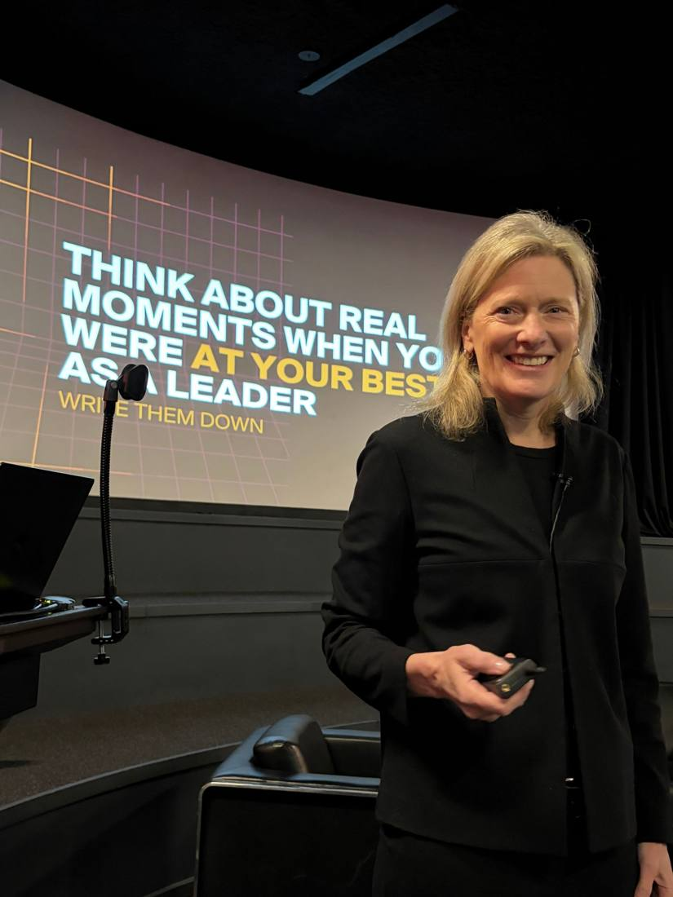
        <span class="kicker">Keynote</span>
        <h3>The AI Imperative for Women Leaders</h3>
        <p>Senior women have a responsibility to lead in AI, and this talk shows them how to start. Tiffany walks through the adoption gap, what changes when women build with AI themselves, and the first moves any executive can make this week. It works for conferences, associations and leadership summits, with an optional fireside conversation.</p>
        <div class="fee"><span>Paid engagement</span><b>Fees on request</b></div>
      </article>
      <article class="offer feature">
        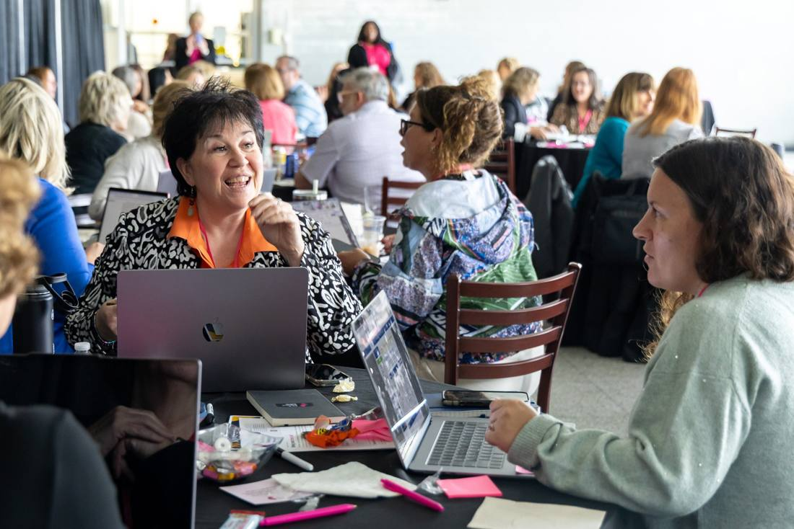
        <span class="kicker">Workshop</span>
        <h3>The AI Rubric for your organization</h3>
        <p>A hands-on program for your women leaders, your leadership team or your members. Every participant builds a working AI tool with facilitators at her side, and the program is tailored to your industry, your tools and your governance rules.</p>
        <div class="fee"><span>Paid engagement</span><b>Fees on request</b></div>
      </article>
    </div>
  </div>
</section>

<section class="gap" id="research" aria-labelledby="research-h">
  <div class="wrap">
    <div class="section-head">
      <span class="pill">Research partnership</span>
      <h2 id="research-h">Help us build the research on <em>executive women and AI</em></h2>
      <p class="lede">We're looking for a research partner to support dedicated research on executive women and AI. Across four new cities in 2027, the AI Rubric brings together senior women leaders from many industries, giving a research partner a consistent group to learn from over time.</p>
    </div>
    <div class="r-grid">
      <article><h3>Usage</h3><p>How often senior women use AI, for which work and with what results.</p></article>
      <article><h3>Governance</h3><p>How they approach risk, ethics and oversight, and the role they play in their organizations' AI decisions.</p></article>
      <article><h3>Attitudes</h3><p>Confidence, trust and concern about AI, and how those shift after hands-on experience.</p></article>
    </div>
    <div class="hero-ctas" style="margin-top:32px"><a class="btn btn-primary" href="#contact" data-topic="research">Talk to us about research</a></div>
  </div>
</section>

<section class="about" id="about" aria-labelledby="about-h">
  <div class="wrap team-wrap">
    <div class="section-head">
      <span class="pill">The team</span>
      <h2 id="about-h">The AI Rubric <em>team</em></h2>
      <p class="lede">Four leaders bring the AI Rubric to every city. Together they combine practical AI fluency, presence coaching, executive leadership development and legal and governance experience.</p>
    </div>
    <figure class="team-photo">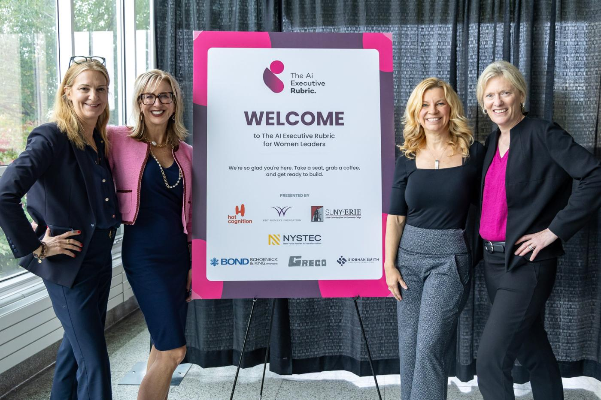</figure>
    <div class="team">
      <article class="member">
        <span class="avatar" aria-hidden="true">TV</span>
        <div class="member-body">
          <h3>Tiffany Vasilchik</h3>
          <p class="role">Co-Founder, Hot Cognition</p>
          <p>Tiffany helps executives build practical AI skills to work differently, make better decisions and lead in an AI-powered world. She brings more than 20 years of experience in business development, innovation and brand strategy, including work with Prophet, Landor, Fahrenheit 212, PepsiCo and Mondelez. Her hands-on approach spans everyday AI use, digital twins and AI agents that solve business problems.</p>
        </div>
      </article>
      <article class="member">
        <span class="avatar" aria-hidden="true">CS</span>
        <div class="member-body">
          <h3>Cate Smit</h3>
          <p class="role">Presentation and Confidence Coach, Enter Smiling</p>
          <p>Cate helps leaders bring their most authentic human selves to the stage and screen, especially in the age of AI. A public speaker, executive coach and confidence builder, Cate connects presence with personal branding. She brings more than 20 years of acting, creative production, gala auctioneering and fundraising strategy.</p>
        </div>
      </article>
      <article class="member">
        <span class="avatar" aria-hidden="true">SS</span>
        <div class="member-body">
          <h3>Siobhan Smith</h3>
          <p class="role">Founder and Principal, Siobhan Smith Executive Consulting</p>
          <p>Siobhan partners with CEOs and leadership teams to strengthen leadership effectiveness, succession and organizational capability. She brings more than 35 years of leadership and consulting experience, including senior roles at First Niagara Financial Group and New Era Cap. She is a Certified Executive Coach and Certified Team Coach.</p>
        </div>
      </article>
      <article class="member">
        <span class="avatar" aria-hidden="true">LT</span>
        <div class="member-body">
          <h3>Lorrie Turner</h3>
          <p class="role">Former Chief Legal Officer, New Era Cap</p>
          <p>Lorrie spent more than 20 years at New Era Cap, most recently as Chief Legal Officer, Senior Vice President of Global Legal and Brand Protection, and Secretary. She brings deep legal, brand protection and governance experience to the AI Rubric.</p>
        </div>
      </article>
    </div>
  </div>
</section>

<section class="paper" id="faq" aria-labelledby="faq-h">
  <div class="wrap">
    <div class="section-head">
      <span class="pill">FAQ</span>
      <h2 id="faq-h">Questions about <em>the AI Rubric</em></h2>
    </div>
    <div class="faq">
      <div class="faq-item"><h3>What is the Women's AI Executive Rubric?</h3><p>The Women's AI Executive Rubric is a hands-on program where executive women build working AI tools alongside university student facilitators and local AI startups. It was created by Hot Cognition and launched at SUNY Erie in Buffalo, New York on October 2, 2026.</p></div>
      <div class="faq-item"><h3>Who is the AI Rubric for?</h3><p>It's built for executive women who want to lead in AI. Organizations can bring it to their leadership teams, and executive women's leadership organizations, universities and AI startup communities can partner to bring it to their cities.</p></div>
      <div class="faq-item"><h3>What do executives build and take home?</h3><p>Every executive in Buffalo vibe-coded and presented a working AI tool, building it by describing it in plain language. Each leader also leaves with a personal context document, a prompt set for using AI as an assistant, strategist and creator, and a personal commitment to lead with AI.</p></div>
      <div class="faq-item"><h3>How is the AI Rubric different from other AI training?</h3><p>Participants spend 30 to 40% of session time building, and the program covers AI trends, ethics and governance alongside practical tools. It brings executives, student facilitators and AI startups into one room, and every executive seat funds a seat at an intro to AI session for an underserved woman.</p></div>
      <div class="faq-item"><h3>How can my city host the AI Rubric?</h3><p>We're bringing the AI Rubric to four new cities in 2027. Each city brings together an executive women's leadership organization, a university or business school and an AI startup community, with support from local business sponsors. Hot Cognition develops the curriculum and leads delivery, and net proceeds are shared with local partners.</p></div>
      <div class="faq-item"><h3>Why do women use AI less than men?</h3><p>A Harvard Business School review of more than 300,000 people found that 39% of women use generative AI, compared with 48% of men. A 2026 Lean In survey found women get less encouragement from managers to use AI, and men who use it at work are 27% more likely to be praised for it.</p></div>
      <div class="faq-item"><h3>Who runs the AI Rubric?</h3><p>The AI Rubric is led by Tiffany Vasilchik, co-founder of Hot Cognition, with Cate Smit of Enter Smiling, Siobhan Smith of Siobhan Smith Executive Consulting and Lorrie Turner, former Chief Legal Officer of New Era Cap.</p></div>
    </div>
  </div>
</section>

<section class="light book" id="contact" aria-labelledby="book-h">
  <div class="wrap">
    <div class="book-copy">
      <span class="pill">Get in touch</span>
      <h2 id="book-h">Let's talk about <em>what's next</em></h2>
      <p class="lede">Choose what you're interested in and send a note. Tiffany will follow up within two business days to set up a short intro call.</p>
    </div>
    <div class="mail-card">
      <fieldset class="topics">
        <legend class="k">I'm interested in</legend>
        <label><input type="radio" name="topic" id="tp-city" value="city" checked> Bringing the AI Rubric to my city</label>
        <label><input type="radio" name="topic" id="tp-org" value="org"> A workshop or keynote for my leadership team</label>
        <label><input type="radio" name="topic" id="tp-research" value="research"> Supporting the research</label>
        <label><input type="radio" name="topic" id="tp-list" value="list"> Joining the AI Rubric in my city</label>
      </fieldset>
      <span class="mail-addr" id="mail-addr">tiffany@<wbr>theaiexecutiverubric.com</span>
      <div class="btns">
        <a class="btn btn-primary" id="m-gmail" href="https://mail.google.com/mail/?view=cm&amp;fs=1&amp;to=tiffany@theaiexecutiverubric.com&amp;su=AI%20Rubric%3A%20city%20partnership" target="_blank" rel="noopener">Email in Gmail</a>
        <a class="btn btn-primary" id="m-outlook" href="https://outlook.office.com/mail/deeplink/compose?to=tiffany@theaiexecutiverubric.com&amp;subject=AI%20Rubric%3A%20city%20partnership" target="_blank" rel="noopener">Email in Outlook</a>
        <button class="btn btn-outline" type="button" id="copy-mail">Copy email address</button>
        <a class="btn btn-outline" id="m-app" href="mailto:tiffany@theaiexecutiverubric.com?subject=AI%20Rubric%3A%20city%20partnership">Open my mail app</a>
      </div>
      <div class="mail-links">
        <a href="https://hotcognition.ai" target="_blank" rel="noopener">hotcognition.ai</a>
        <a href="https://www.linkedin.com/in/tiffanyvasilchik-ai-sales-consultant" target="_blank" rel="noopener">LinkedIn</a>
      </div>
    </div>
  </div>
</section>
</main>

<footer>
  <div class="wrap">
    <span>&copy; 2026 Hot Cognition. The Women's AI Executive Rubric.</span>
    <span>tiffany@theaiexecutiverubric.com</span>
  </div>
</footer>

<script>
(function(){
  var b=document.getElementById('copy-mail'),a=document.getElementById('mail-addr');
  b.addEventListener('click',function(){
    function sel(){var r=document.createRange();r.selectNodeContents(a);var s=getSelection();s.removeAllRanges();s.addRange(r);b.textContent='Address selected';}
    try{navigator.clipboard.writeText(a.textContent).then(function(){b.textContent='Copied';},sel);}catch(x){sel();}
  });
  var to='tiffany@theaiexecutiverubric.com';
  var subj={list:'AI Rubric: join the list',org:'AI Rubric: workshop or keynote',city:'AI Rubric: city partnership',research:'AI Rubric: research partnership'};
  function setTopic(k){
    var r=document.getElementById('tp-'+k); if(!r) return; r.checked=true;
    var s=encodeURIComponent(subj[k]);
    document.getElementById('m-gmail').href='https://mail.google.com/mail/?view=cm&fs=1&to='+to+'&su='+s;
    document.getElementById('m-outlook').href='https://outlook.office.com/mail/deeplink/compose?to='+to+'&subject='+s;
    document.getElementById('m-app').href='mailto:'+to+'?subject='+s;
  }
  document.querySelectorAll('input[name=topic]').forEach(function(r){r.addEventListener('change',function(){setTopic(r.value);});});
  document.querySelectorAll('[data-topic]').forEach(function(l){l.addEventListener('click',function(){setTopic(l.getAttribute('data-topic'));});});
})();
</script>
